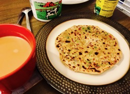

                                    <figure class="cards double">                                       
                                        <figcaption class="caption">
                                        
                                            <!--  Copy your recipie in here -->

                                            <h1><span style="color: #993366;">Onion Paratha</span></h1>

                                             
                                            <br>
                                            <p><strong>Ingredients</strong></p>
                                            <ul>
                                            <li>Whole wheat flour 2 cups</li>
                                            <li>Oil 1 tbsp</li>
                                            <li>Onion &frac12; finely chopped</li>
                                            <li>Cilantro 1 cup finely chopped</li>
                                            <li>Green chili 3 finely chopped</li>
                                            <li>Water as required</li>
                                            <li>Salt as required</li>
                                            <li>Butter as required&nbsp;</li>
                                            </ul>
                                            <p><strong>Method</strong></p>
                                            
                                            <p>Mix flour, salt, water, oil and knead a smooth dough. Let it rest for 2 or 3 hours covering it with a wet cloth.</p>
                                            <p>In a bowl mix chopped onions, cilantro and green chilies.</p>
                                            <p></p>
                                            <p>Roll the dough into lemon sized balls. Roughly around 6 of them.</p>
                                            <p>With a rolling pin flatten the dough a bit and spoon the onion mixture into it.</p>
                                            <p></p>
                                            <p>Close and flatten again dusting with flour.</p>
                                            <p></p>
                                            <p>Cook the roti on a flat skillet flipping sides frequently till done. A minute or so on each side.</p>
                                            <p></p>
                                            <p>Remove from heat and brush it with butter while its hot. Serve with a bowl of yoghurt and spicy pickled mango on the side as dips.</p>
                                            <p></p>
                                            <p>&nbsp;</p>
                                            <p><strong>&nbsp;</strong></p>

                                            <!-- Copy Up to here-->

                                        </figcaption>

                                    </figure>
                             